Наші послуги
-
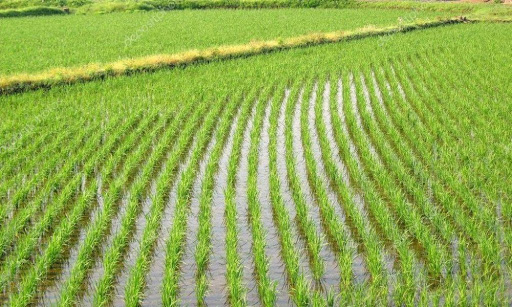 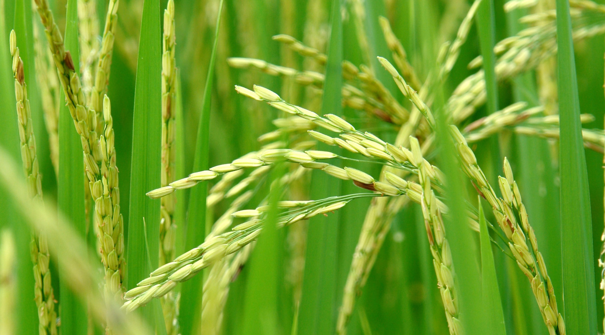
Вирощування рису
Рис дуже вимогливий та чутливий до вологи, тому вирощування рису відбувається переважно на повністю затоплених полях. Тривалість вегетаційного періоду в українських умовах: 95—140 днів
-
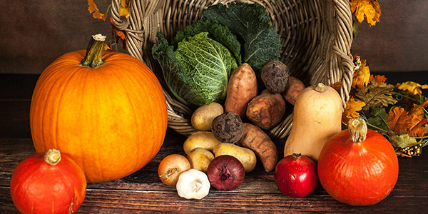 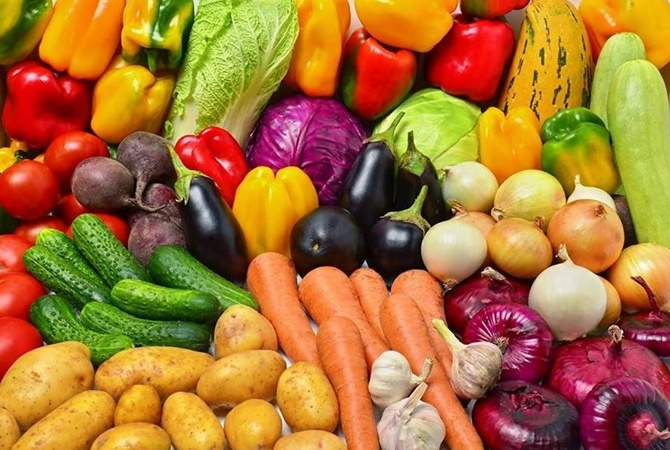
Однорічні та дворічні культури
Плодоношення триває поспіль декілька років. До таких належать: ревінь, щавель, хрін, спаржа, цибуля-батун, цибуля-шніт, цибуля багатоярусна, цибуля слизун та запашна.
-
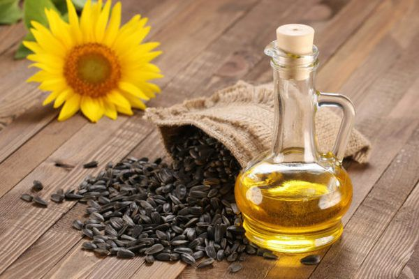
Виробництво олії та тваринних жирів
Тваринні жири, як і рослинні, мають високу енергетичну цінність. Багато тваринних жирів споживається прямо або побічно, як інгредієнти у продуктах харчування, у складі рослинно-тваринних саломасів — у вигляді так званих «кулінарних» чи «кондитерських жирів», як наповнювач у м'ясних виробах.
-
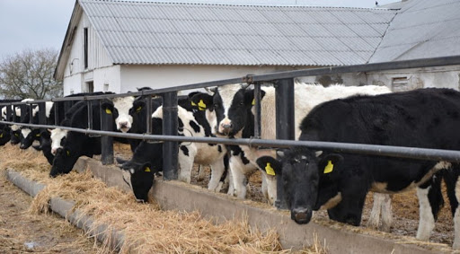 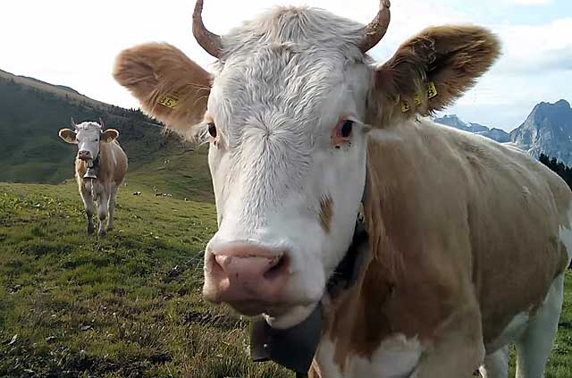
Розведення великої рогатої худоби молочних порід
Сегментом тваринництва великої рогатої худоби є розведення корів. М'ясна складова цього бізнесу - виробництво яловичини - це додатковий продукт тваринництва, що має основний пріоритет в молочному напрямі.
-
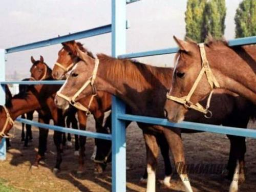 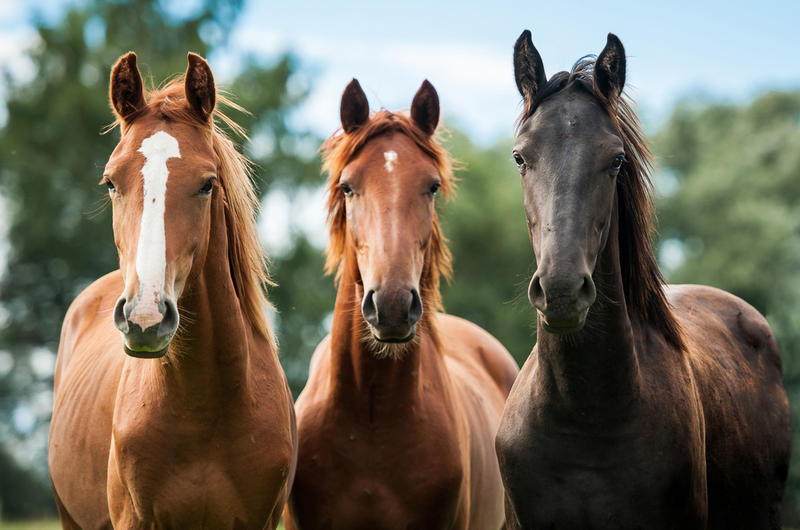
Розведення коней та інших тварин родини конячих
Розведення коней - це кропітка і складний процес. Коней вирощують для подальшого перепродажу, отримання м'ясо-молочної продукції, для сільськогосподарських робіт.
-
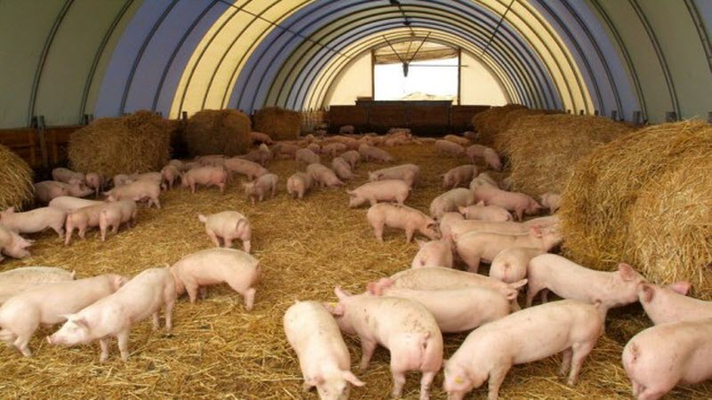 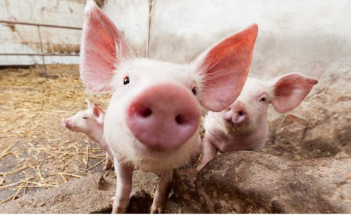
Розведення свиней
Свинина на ринку м’ясної продукції користується великою популярністю: вона в міру жирна і калорійна, дешевше яловичини, містить корисні речовини для людського організму.
-
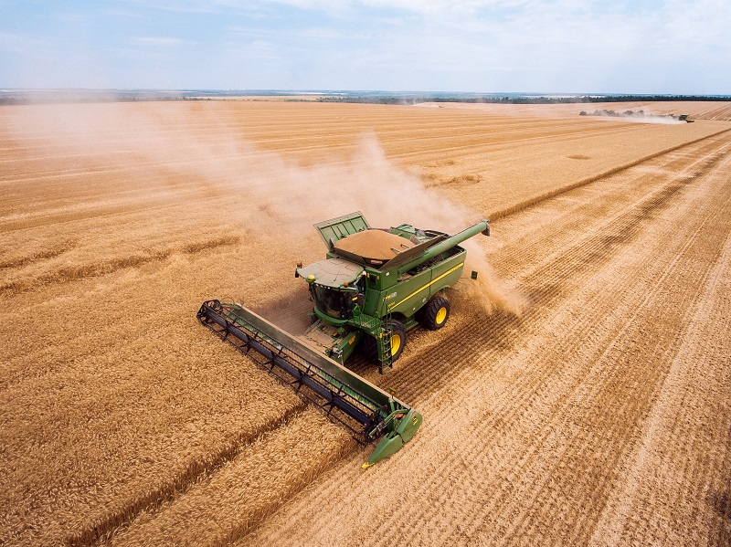 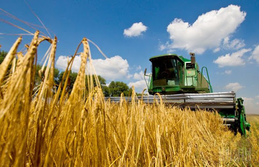
Допоміжна діяльність у рослинництві і тваринництві
Допоміжні види сільськогосподарської діяльності, подібні до сільськогосподарських, але не спрямовані на виробництво продукції (збирання сільськогосподарської продукції). Післяурожайну діяльність, спрямовану на підготовку сільськогосподарської продукції до первісної реалізації.
-
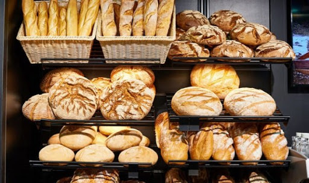 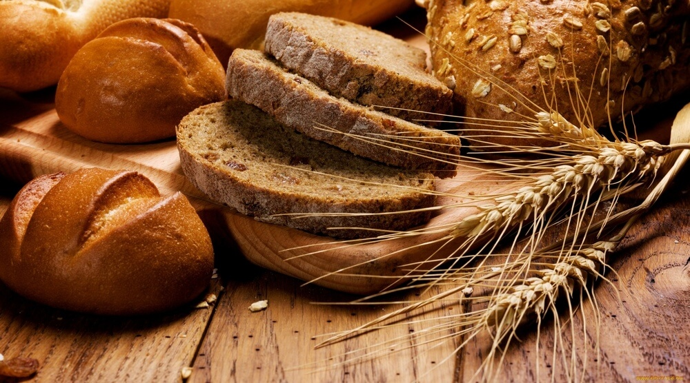
Виробництво хліба та хлібобулочних виробів
Промислове вироблення продукту, випеченого з тіста, приготованого за відповідними рецептурами та технологічними режимами. До таких відноситься: хліб, булочні, здобні, дієтичні, сухарні і бубликові вироби з основної та додаткової хлібопекарської сировини.
-
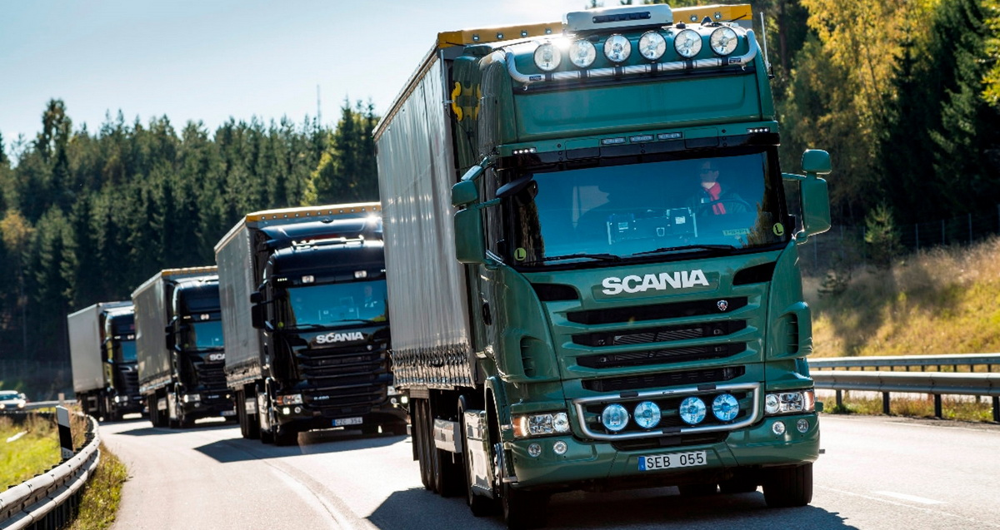 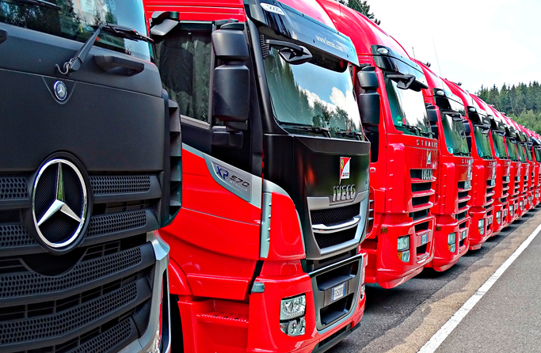
Вантажний автомобільний транспорт
Здійснюємо усі види перевезень вантажним автомобільним транспортом. Надаємо послуги оренди вантажних автомобілів з водієм, надання послуг водія без власного вантажного автотранспортного засобу